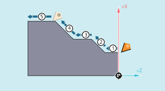
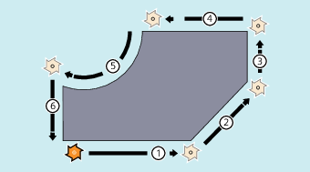

The programmed workpiece contour can be made up of the following contour elements:
Straight lines
Circular arcs
Helical curves (through overlaying of straight lines and circular arcs)
There are special motion commands for the production of the different contour elements.
Their description can be found in the following chapters:
For fast positioning of the tool and for moving around the workpiece, the axes are moved in rapid traverse G0.
| Notice |
Tool operation undefinedBefore starting a machining process, the tool must be pre-positioned in such a way that damage to the tool and workpiece is excluded. |
A motion block contains the target positions for the axes to be traversed (path axes, synchronized axes, positioning axes).
| Note |
|
The axis address may only be programmed once per block. |
The target positions can be programmed in Cartesian coordinates or in polar coordinates:
The traversing motion is always for the last point reached to the programmed target position. This target position is then the starting position for the next travel command.
The motion blocks produce the workpiece contour when performed in succession:
Motion blocks for turning
Motion blocks for milling